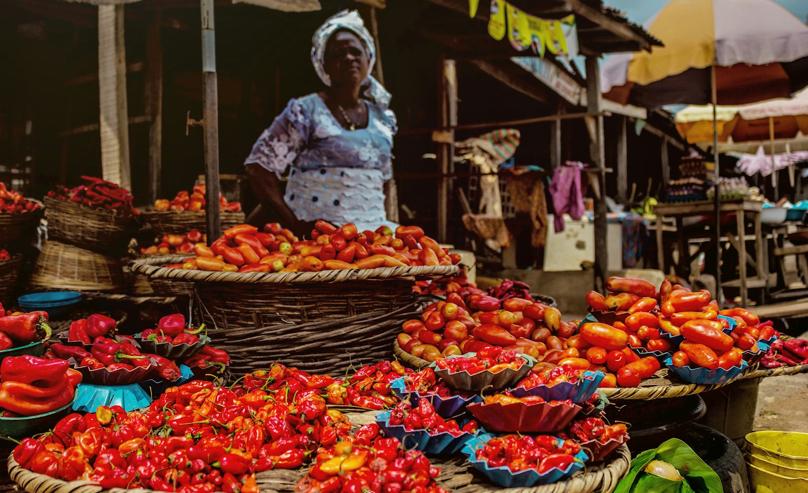
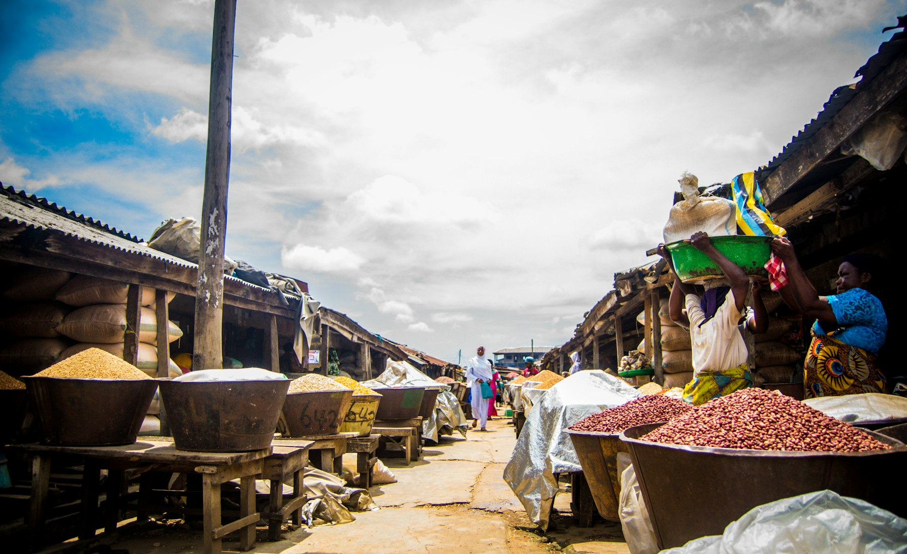

Checked 07:4201
Tomato Basket
Firm, unbruised, sorted by hand. Roughly 4kg.
₦2,500That is the entire promise. Kasu buys at Wuse Market, inspects every item by hand, and photographs your basket before it leaves the stall — so market prices stop coming with market roulette.

Picked this morning, judged by hand, photographed before it leaves. Priced per market unit — the way you actually buy.
Firm, unbruised, sorted by hand. Roughly 4kg.
₦2,500
Thick-walled bell pepper. Eight pieces, no soft spots.
₦1,500
Scotch bonnet, full rubber. Hot as it should be.
₦1,000
Dry-skinned, tight necks, no sprouting. Two-kilo bag.
₦1,800
Cut this morning. Stems still snapping.
₦800
Cleaned and cut to order. Clear eyes, firm flesh.
₦3,500Swipe the lineup →
 Nothing leaves the market without passing through a hand
Nothing leaves the market without passing through a handRepriced every morning before 7am and locked for the day. What you see at checkout is what you pay.
This is what a Kasu order looks like from the inside. Times are real, the photo is your actual basket, and it is all attached before the rider moves.

Not a stock photo of produce. The actual basket, at the actual stall, minutes before it left.

Not twenty thousand. Every SKU is one a checker can judge by hand in five seconds — if we cannot judge it, we do not sell it. A huge catalogue is just a promise nobody is keeping.

Our checker is at Wuse Market before the good stock is picked over. Later runs are how quality quietly slips.
Re-scored weekly on rejection rate. Two weeks above 15% and the stall is dropped.
Nobody here is authorised to debate you about a bad tomato. That authority does not exist on purpose.
Supermarkets don't sell better tomatoes. They sell tomatoes somebody already sorted. That sorting is the entire product.